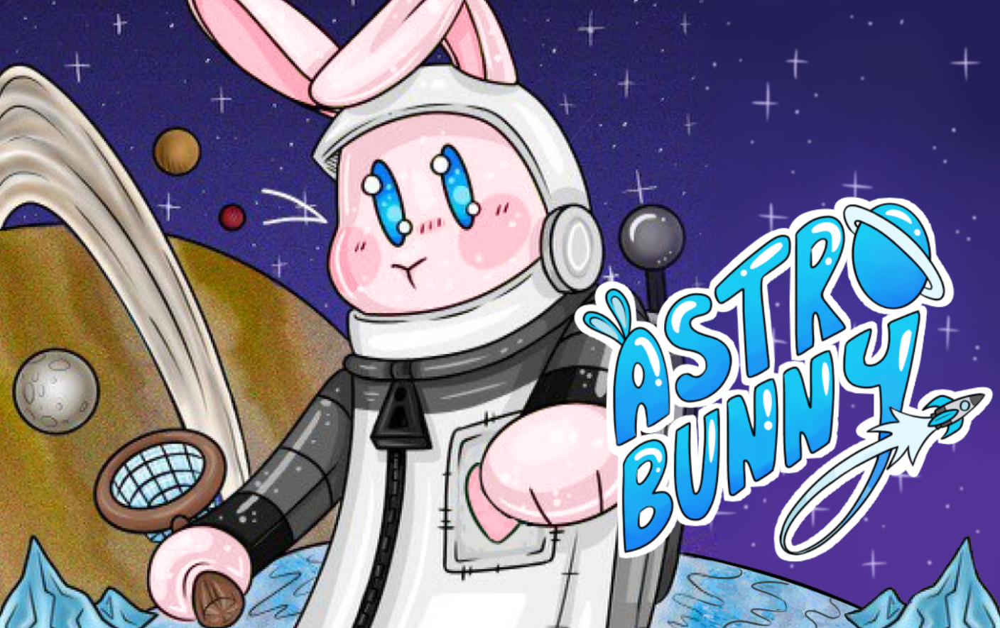
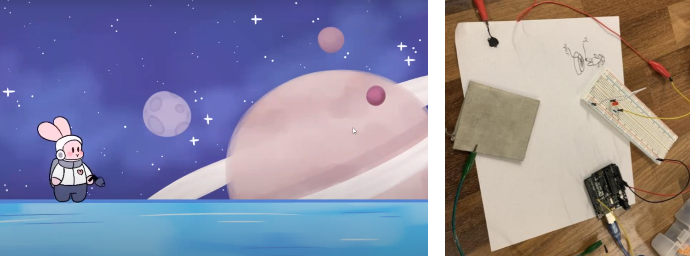

feb 2023 <
An entry for the T9Hacks hackathon 2023. Our objective was to create a space-themed video game and controller. Our game, AstroBunny, won Best in Game Track. We created the game and controller using Python, Twine, and Arduino.


This project was inspired by the search for life in the universe, and more specifically the possibility of life within our own solar system. We chose Enceladus as a setting because its subsurface oceans make us think that the evolution of life there may be possible. This game was inspired by the many "what ifs" that surround life outside of Earth.
AstroBunny is a platformer game which is based upon choices that the player makes. The story follows a rabbit astronaut who ventures to Enceladus and finds life under the surface. Players must chose between diplomacy and scientific research, and each choice has its own impacts. The game controller is a plush rabbit and conductive platform that are wired to a microcontroller.
Both of the plush rabbit's feet are lined with conductive fabric that is connected to the output pin in the microcontroller. The platform for the rabbit has conductive paint across the surface connected to a wired LED. When the conductive fabric and paint make contact the circuit is complete and the LED lights up accordingly. The game itself was storyboarded using Twine, a web based service which is typically used for text-based choose your own adventure games. It was coded using Python and its arcade library, as it was a fairly easy tool to use when creating a platform based game.
The complete documentation and entry can be found here.